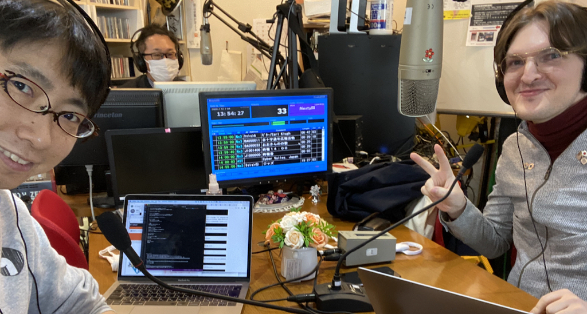

Cyber
Valley
Thu 11:30-12:30
at tannan.fm or 79.1MHz in Tannan area
CyberValley, Japan
CyberValley, Japan

サイバーナビゲーター：
帝都久利寿
、
福野泰介
ラジオ番組 毎週木 11:30-12:30
tannan.fm or 79.1MHz@sabae
CyberFriday
毎月最終金曜夜は、
CyberFriday （サイバーフライデー）
2022/10/28(金) 19:00-22:00 at
jig.jp本店＆開発センター
時間内出入り自由、出展、発表、大歓迎
参加費：学生無料、社会人1,000円（展示者、発表者、初回の方は無料）
CyberHistory
2022-08-26 CyberFriday #17 (
report
)
2022-07-29 CyberFriday #16 (
report
)
2022-06-24 CyberFriday #15 (
report
)
2022-05-27 CyberFriday #14 at LUFF (
report
)
2022-04-22 CyberFriday #13 at LUFF (
report
)
2022-03-25 CyberFriday #12 (
report
)
2022-02-25 CyberFriday #11 (reports
by @woollyinsta
,
by @fujisyoten
,
by @taisukef
)
2022-01-28 CyberFriday #10
2021-11-26 CyberFriday #9 feat.
NT鯖江
2021-10-29 CyberFriday #8
2021-09-25 CyberSymposium
「脱ハンコ」と サイバー時代の個人認証 | 京都大学公共政策大学院
2021-09-24 CyberFriday #7 (
photo
,
report
)
2021-08-27 CyberFriday #6 (
report
)
2021-07-30 CyberFriday #5 (
report
)
2021-06-25 CyberFriday #4 (
report
)
2021-05-28 CyberFriday #3 (
report
)
2021-03-26 CyberFriday #2 (
report
)
2021-02-26 CyberFriday #1
2021-01-31 edu project started with
Afrel
,
na-s.jp
,
ict4e
!
2021-01-28
gov project at Sabae
started!
2020-12-04 started!
CyberMap
CyberSource
src of this web on GitHub
(
cyber-background
)